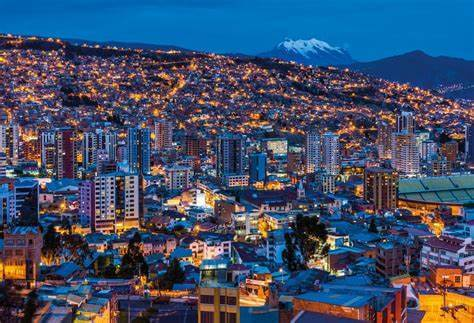

Jose Manuel / Admin
Hello! My name is Jose Manuel. I'm 21 years old and I live in La Paz, Bolivia. I’ve been interested in learning about software development for a year now. In addition to my passion for software development, I enjoy exploring new technologies and experimenting with coding languages. My goal is to become proficient in various programming languages and contribute to innovative projects. Overall, I am excited about the future and the opportunities that lie ahead.
My Passion for Economics
I have a deep passion for economics, particularly for understanding how free markets, human creativity, and cooperation contribute to prosperity. Inspired by the Austrian School of Economics, I believe in the power of individual action and entrepreneurial spirit to transform societies. My dream is to apply these principles to help improve Bolivia’s economic future. Through my studies and research, I aim to dismantle common economic misconceptions and inspire others to appreciate the role of economic freedom in fostering innovation and growth.
The Beauty of La Paz
La Paz, Bolivia, is the world’s highest administrative capital, situated at about 3,650 meters above sea level in a canyon created by the Choqueyapu River. The city’s streets are a blend of modern skyscrapers, colonial architecture, and vibrant markets. It’s a place where history and modernity coexist, offering breathtaking views and unique cultural experiences. I am proud to call La Paz my home and to be part of a community rich in traditions, resilience, and creativity.